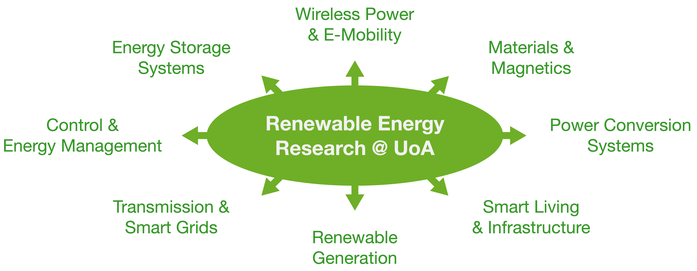
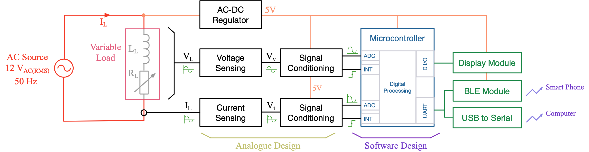
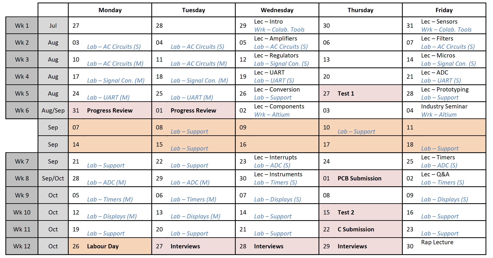

class: title-slide count: false .logo-title[] ## ELECTENG 209 # Analogue & Embedded Software Design ### An Introduction to the Course .TitleAuthor[Duleepa J Thrimawithana] --- layout: true name: template_slide .logo-slide[] .footer[[Duleepa J Thrimawithana](https://www.linkedin.com/in/duleepajt), Department of Electrical, Computer and Software Engineering (2020)] --- name: S1 # Background - High reliance on fossil fuels and associated issues have become increasingly more evident over the last two decades - Human-made climate change due to emissions is one of the most alarming concerns .center[ <iframe width="560" height="315" src="https://www.youtube-nocookie.com/embed/Gz_L6KuqvFI?start=0&end=84" frameborder="0" allow="accelerometer; autoplay; encrypted-media; gyroscope; picture-in-picture" allowfullscreen></iframe> ] --- name: S2 # Renewable Energy - Increasing emphasis on renewable generation, efficient conversion, sustainable utilization and electrification of transportation - Many countries have pledged to reduce emissions .center[ <iframe width="560" height="315" src="https://www.youtube-nocookie.com/embed/1kUE0BZtTRc?start=0&end=135" frameborder="0" allow="accelerometer; autoplay; encrypted-media; gyroscope; picture-in-picture" allowfullscreen></iframe> ] --- name: S3 # Distributed Generation - Decentralized energy generation (DEG) is gaining popularity due to social, economical and environmental benifits it offers - Energy is generated locally at or near point of consumption using micro-scale renewable systems .center[ <iframe width="560" height="315" src="https://www.youtube-nocookie.com/embed/dA76xquzQFo?" frameborder="0" allow="accelerometer; autoplay; encrypted-media; gyroscope; picture-in-picture" allowfullscreen></iframe> ] --- name: S4 # Energy Management .left-column[ - Managing energy flow in a DEG systems is very challenging - Many distributed sources, loads and storage systems need to be concurrently managed - A smarter grid with many smart sensors that monitor the flow of energy is a key solution - Enables making smart decissions to effectively manage the generation, utization, storage and retrieval of energy - Smart appliances, storage systems and controllers use this information to control the energy flow - Many smart metering/monitoring solutions have been developed - Smart meters report house-hold consumption to retailer - Smart energy monitors can monitor energy consumed by a specific load ] .right-column[ .center[<img src="img/monitors.png" width="190px">] ] --- class: title-slide layout: false count: false .logo-title[] # Renewable Energy Research at UoA ### A Few Examples --- layout: true name: template_slide .logo-slide[] .footer[[Duleepa J Thrimawithana](https://www.linkedin.com/in/duleepajt), Department of Electrical, Computer and Software Engineering (2020)] --- name: S5 # Research Groups - Accross UoA, specially in FoE, there are many research groups working on various renewable energy related research projects - Power electronics research group at ECSE is at the forefront of this research .center[] --- name: S6 # The Power Electronics Research Group .center[<img src="img/PEGROUP.gif" height="430">] --- name: S7 # Pioneers in Wireless Power Transfer (WPT) .center[ <iframe width="784" height="441" src="https://www.youtube-nocookie.com/embed/G1q1HZLQ528?" frameborder="0" allow="accelerometer; autoplay; encrypted-media; gyroscope; picture-in-picture" allowfullscreen></iframe> ] --- name: S8 # WPT Research Facilities & Postgraduates .center[ ] --- name: S9 # ECSE 2nd Years Undertaking Research .center[ <img src="img/PatrinBashar.png" height="375"> .credits[ Bashar Dawood (left) & Patrin Illenberger (right) showcasing their summer research projects (2012). ] .credits[ Currently Bashar works as the Managing Director at NGen Automation and Dr. Illenberger works as a hardware engineer at Apple. ] ] --- name: S10 # ECSE 3rd Years Undertaking Research .center[ <img src="img/RyanWynand.png" height="375"> .credits[ Ryan Kurte (left) & Wynand Malan (right) showcasing their summer research projects (2012). ] .credits[ Currently Ryan works as a R&D engineer at Datamars and Dr. Malan works as a Power Systems Design & Integration Engineer at Apple. ] ] --- name: S11 # ECSE Final Years Undertaking Research .center[ <iframe width="672" height="378" src="https://www.youtube.com/embed/o9-tELjV1wQ" frameborder="0" allow="accelerometer; autoplay; encrypted-media; gyroscope; picture-in-picture" allowfullscreen></iframe> .credits[ Hamish O'Neill & Roman Amor showcasing their final year research project (2018). ] .credits[ Currently Hamish works as a hardware engineer at Apple and Roman works as a firmware engineer at Apple. ] ] --- name: S12 # Intro to Power Electronics (ELECTENG 734) .center[ <iframe width="672" height="378" src="https://www.youtube-nocookie.com/embed/bP4099oz7KU" frameborder="0" allow="accelerometer; autoplay; encrypted-media; gyroscope; picture-in-picture" allowfullscreen></iframe> .credits[ Students design and develop the power electronics required to wireleslly power a RC car. The best teams compete on the last day ] .credits[ of the semester each year to find a winner. This is the final race, in 2018, where the top 2 teams were equally matched. ] ] --- name: S13 # ELECTENG 734 Prizegiving .center[ <img src="img/EE734_2018.png" height="325"> .credits[ Prizegiving (left) & Finalists (right) showcasing their final designs (2018). ] .credits[ Sumant, Kunal and a few other engineers from Apple attended the event. ] ] --- class: title-slide layout: false count: false .logo-title[] # Design of a Smart Energy Monitor ### Project Information --- layout: true name: template_slide .logo-slide[] .footer[[Duleepa J Thrimawithana](https://www.linkedin.com/in/duleepajt), Department of Electrical, Computer and Software Engineering (2020)] --- name: S14 # The Project - What is this course about and what should you expect to learn? - Gives you an oppertunity to put in to practice some of the theories (analogue electronics & embedded software development) you learnt to design and engineer a solution to a 'real life problem' - During this process you will gain fundamental knowledge, experience, skill-set and professional behaviour needed to succeed in the more challenging design projects you will engage in the future - What would you design and engineer during this course? - An energy monitor to measure and display the amount of energy consumed by a household appliance - How would you achieve this task? - The voltage and current at the input to appliance is measured using __analogue circuitry__ consisting of sensors, amplifiers and filters - An __embedded software program__ executed on a microcontroller converts the analogue signals to digital form and calculates the energy consumption together with other important information - The information is shown on a __local LCD display__ and also communicated __wirelessly using Bluetooth__ with other smart devices --- name: S15 # System to Implement - To simplify the design, we will consider a scaled-down system, which uses a low-voltage AC source - An AC load, consisting of a variable resistor in series with a fixed inductor, is used to emulate an house-hold appliance .center[] --- name: S15 # Design Specifications <table class="tg" style="undefined;table-layout: fixed; width: 647px; margin-left:auto; margin-right:auto;"> <colgroup> <col style="width: 333px"> <col style="width: 314px"> </colgroup> <thead> <tr> <th class="tg-dzaw"><span style="color:white">Parameter</span></th> <th class="tg-dzaw"><span style="color:white">Value</span></th> </tr> </thead> <tbody> <tr> <td class="tg-jayl">Source Voltage</td> <td class="tg-jayl"> 12 V<sub>RMS</sub> ± 10% </td> </tr> <tr> <td class="tg-sabo">Source Frequency </td> <td class="tg-sabo"> 50 Hz ± 10% </td> </tr> <tr> <td class="tg-ig71">Load Range</td> <td class="tg-ig71"> 1 VA to 7 VA </td> </tr> <tr> <td class="tg-sabo">Load Power Factor</td> <td class="tg-sabo">0.89 to 0.99</td> </tr> <tr> <td class="tg-ig71">Measurement Accuracy</td> <td class="tg-ig71">5% of full-scale reading</td> </tr> <tr> <td class="tg-sabo">ADC Conversion Rate</td> <td class="tg-sabo">1 kHz or slower</td> </tr> <tr> <td class="tg-ig71">LCD Display Information</td> <td class="tg-ig71">Voltage, Current, Power and Energy</td> </tr> <tr> <td class="tg-sabo">LCD Display Units</td> <td class="tg-sabo">V<sub>RMS</sub>, A<sub>pk</sub>, W and W.min</td> </tr> <tr> <td class="tg-ig71">LCD Scroll Rate</td> <td class="tg-ig71">0.3 s</td> </tr> <tr> <td class="tg-sabo">UART Baud Rate</td> <td class="tg-sabo">9600 Baud</td> </tr> <tr> <td class="tg-jayl">Information Transferred Via UART</td> <td class="tg-jayl">Voltage, Current, Power and Energy</td> </tr> <tr> <td class="tg-096r">PCB Size</td> <td class="tg-096r">150 cm² </td> </tr> <tr> <td class="tg-jayl">PCB Technology</td> <td class="tg-jayl">Double Layer with PTH</td> </tr> <tr> <td class="tg-096r">Device Technology </td> <td class="tg-096r">TH or SMT</td> </tr> </tbody> </table> --- name: S16 # Course Calendar .center[] --- name: S17 # Top Designs from the Past (PI) --- name: S17 # Top Designs from the Past (PII) --- name: S18 # Course Feedback --- name: S18 # Entry Performance --- name: S18 # Past Grades --- name: S18 # How to Get an Excellent Grade - Is the project challenging? - Yes, because this is your first real-world engineering design project - Due to lack of experience it is common to encounter unforeseen design and intigration issues when developing a system, especially with hardware-software interface - What are the most challenging aspects? - Time management, planing and group work are the key challenges - As in a real life project, resources are limited (time, teams' availability, lab space, equipment, etc.) and therefore last minute frantic endeavour will not help - How coul I get an excellent grade? - Enjoy designing a real-world product and be passionate about your design (this is the key ingredient) - Plan and manage your and your team members' time well - Throughout the semester you are expected to spend about 10 hours a week on the project - Make full use of all lab sessions and staff support provided (there will be in average of about 10 support hours a week) --- name: S18 # Poor Exemplars - Last Minute Endeavour (PI) --- name: S18 # Poor Exemplars - Last Minute Endeavour (PII) --- class: title-slide layout: false count: false .logo-title[] # Assessment Components ### Details on How to Prepare --- layout: true name: template_slide .logo-slide[] .footer[[Duleepa J Thrimawithana](https://www.linkedin.com/in/duleepajt), Department of Electrical, Computer and Software Engineering (2020)] --- exclude: true name: S19 # An Uncompensated Pick-up - Assume a load resistor, `\(R_{L}\)`, is connected directly across a pick-up coil, which is coupled to a primary coil - The primary coil is driven by the primary converter generating a current `\(I_{pt}\angle 0\)` at an angular frequency `\(\omega = 2\pi f\)` - The current flowing through pick-up coil as well as the load will be \\[ I\_{st} = \frac {-V\_{sr}} {R\_{L} + j\omega L\_{st}} = \frac {-\omega MI\_{pt}e^{j\pi/2}} {R\_{L} + j\omega L\_{st}} \\] - The impedance of `\(L_{st}\)` limits the ability to supply current to `\(R_{L}\)` --- exclude: true name: S11 # ECSE Final Years Undertaking Research ```terminal josh@brick ~/repos/aha $ git log -2 <span style="color:olive;">commit 36b0a3af174e204c8d0a7a993ad467cd7be39bca</span> Author: Ziz <zizsdl@googlemail.com> Date: Fri Aug 3 10:29:43 2012 +0200 Small version changes, make clean, merging, etc. ... ``` --- exclude: true name: S12 # Test ```c int a = 1; //This is a Test for (a<10){ a++; } ``` --- class: title-slide layout: false count: false .logo-title[] # References --- class: title-slide layout: false count: false .logo-title[] # Thank You